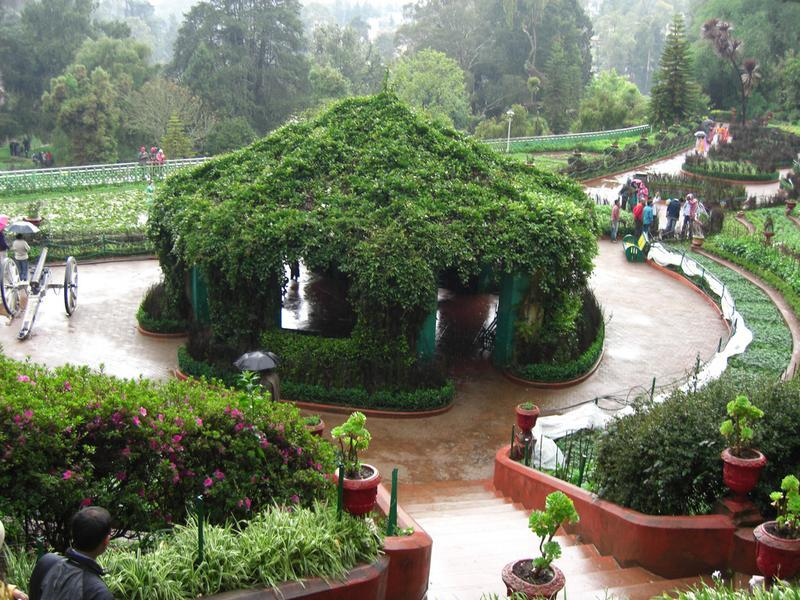

Pondicherry
- This is city of india
- This city is a under union territory
- The Pondicherry is most popular city in Tamilnadu
- It is a very beautiful place of tourisms
- The roch beach is so beautiful location of Pondicherry
- The most beautiful place in Pondicherry is french colony to visit the building is so beautiful
- And the boating on beach is so supar there the 4 locations of beach
- The cost of boating is perhead 400Rs
This is city of india
This city is a under union territory
The Pondicherry is most popular city in Tamilnadu
It is a very beautiful place of tourisms
The roch beach is so beautiful location of Pondicherry
The most beautiful place in Pondicherry is french colony to visit the building is so beautiful
And the boating on beach is so supar there the 4 locations of beach
The cost of boating is perhead 400Rs
To visit the locations is urban port and movie shooting spart
And mangrove forest , oshion ride upto 5km the beautiful place mangrove
After the boating is to go est a food the famous restarent
The eden beach is near 2km and the josaph francols duplex statue
The fentastic place aurovelli on mantra mandir
To visting a mantra mandir park the car to walk a 1.5km
The route is more measumes and shops are avalible
Return to mantra mandir to car parking free bus is avalible
To visit the live arting in french colony per person to visit measuam 290Rs
And to visit Raj nivas and white town also
To visiting in Pondicherry one more place is arulmigu manakula vinayagar temple
And the visit an the basilica of the sacred a heart of jesus
And to visit a botanical garden

And the boating on beach is so supar there the 4 locations of beach
The cost of boating is perhead 400Rs
To visit the locations is urban port and movie shooting spart
And mangrove forest , oshion ride upto 5km the beautiful place mangrove
After the boating is to go est a food the famous restarent
The eden beach is near 2km and the josaph francols duplex statue
The fentastic place aurovelli on mantra mandir